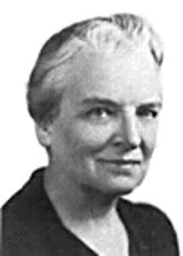
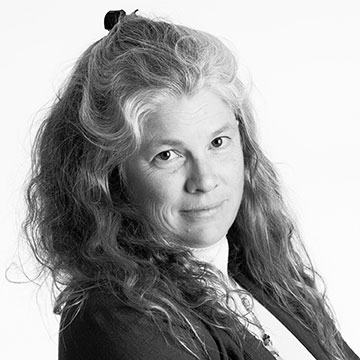
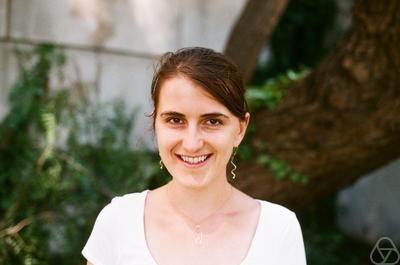

In celebration of the anniversary of the addition of the first woman to become an associate professor in the Berkeley Math Department and her incredible devotion to the math community at Berkeley
Dr. Kristin Lauter
Microsoft Research
This talk will give an overview of the history of various hard problems in number theory which are used as the basis for cryptosystems. I will survey the evolution of attacks and discuss the upcoming NIST competition to standardize new cryptographic schemes for a post-quantum world. I will present some current proposals for post-quantum systems based on supersingular isogeny graphs of elliptic curves and lattice-based cryptosystems in cyclotomic number fields. Supersingular Isogeny Graphs were proposed for use in Cryptography in 2006 by Charles-Goren-Lauter, and are currently being considered as candidates for standardization in several tracks of the 2017 NIST Post-Quantum Cryptography International Competition. These are Ramanujan graphs whose nodes are supersingular elliptic curves and edges are isogenies between them.

Kristin Estella Lauter is a mathematician and cryptographer whose research areas are number theory, algebraic geometry, and applications to cryptography. She is particularly known for her work on homomorphic encryption, elliptic curve cryptography, and for introducing supersingular isogeny graphs as a hard problem into cryptography. She is a Principal Researcher and Research Manager of the Cryptography Group at Microsoft Research in Redmond, Washington. She served as President of the Association for Women in Mathematics from 2015 –2017. She has published more than 100 papers and holds more than 50 patents.
In 2008 Lauter and her coauthors were awarded the Selfridge Prize in Computational Number Theory. She was elected to the 2015 Class of Fellows of the American Mathematical Society "for contributions to arithmetic geometry and cryptography as well as service to the community." In 2017, she was selected as a fellow of the Association for Women in Mathematics in the inaugural class, and as the 2018-2020 Polya Lecturer for the Mathematical Association of America.
Lauter received her BA, MS, and Ph.D degrees in mathematics from the University of Chicago, in 1990, 1991, and 1996, respectively. Prior to joining Microsoft, she held positions as a visiting scholar at Max Planck Institut fur Mathematik in Bonn, Germany (1997), T.H. Hildebrandt Research Assistant Professor at the University of Michigan (1996-1999), and a visiting researcher at Institut de Mathematiques Luminy in France (1999).
She is a co-founder of the Women in Numbers Network, a research collaboration community for women in number theory, and she is the lead PI for the AWM NSF Advance Grant (2015-2020) to create and sustain research networks for women in all areas of mathematics. She serves on the Board of Trustees of MSRI, the Advisory Board of the Banff International Research Station and has served on the Council[7] of the American Mathematical Society (2014-2017).
Elena Fuchs
Assistant Professor of Mathematics
UC Davis
In the early 70’s, the concept of “expander graphs” was introduced as an optimal model for networks of arbitrary size. Back then, it was not even known whether such graphs exist or not. Today, we not only know that they exist, but have seen their importance come up in a great spectrum of fields in mathematics and computer science. In this talk, we will explore what these graphs are and give an idea about how they have recently made a splash on the number theory scene. No prerequisites are required.

Professor Elena Fuchs received her B.A. in mathematics here at UC Berkeley in 2005 and earned her Ph.D. in number theory from Princeton University before beginning postdoctoral work at the Institute for Advanced Study in 2010. Since then, she has held positions at UC Berkeley and University of Illinois, Urbana-Champaign. In 2016, Professor Fuchs was awarded the Sloan Fellowship for early-career researchers and is currently an assistant professor at UC Davis.
A committee member of the Association for Women in Mathematics, Professor Fuchs was the president of Princeton University Noetherian Ring and co-founded Princeton Math Circle as a graduate student. Since then, she has been involved in various events including a Summer Workshop for Women in Mathematics at Princeton, Illinois Number Theory Conference, and the 2016 Midwestern Women in Mathematics Symposium as a co-organizer.
Professor Fuchs does research on the interplay between geometric group theory and number theory, such as Apollonian gaskets, which are fractals made of circles. In particular, she is interested in arithmetic properties of integer matrix groups such as various monodromy groups and hyperbolic reflection groups.
The year 2017 marked the centennial of the addition of the first woman to become an associate professor in the Berkeley Math Department – Pauline Sperry. Born in 1885 in Massachusetts, she studied math and music at Smith College, where she later returned for graduate work and teaching mathematics. She continued her graduate studies at the University of Chicago, where she completed her dissertation in projective differential geometry and in 1916 was awarded a doctorate. Then in 1917, she joined UC Berkeley as an instructor, promoted to assistant professor in 1923 and eventually to associate professor in 1932, both demonstrating her brilliance in advanced mathematics as the first woman to achieve those positions in Berkeley. By 1950, she had advised five Ph.D. candidates, published a bibliography and two textbooks, and mentored many women in her decades of service to the Berkeley Math Department.
Sperry’s distinguished career came to a premature end in 1950 when she was dismissed for refusing to sign an oath of loyalty at the height of the anti-communist era. She believed as a matter of principle that the oath would encroach on political freedom. After 2 years, the court ruled in her and other nonsigners favor, but as she was already passed the retirement age, she was reinstated as associate professor emerita. Later, the University President Robert G. Sproul praised her “exceptional ability as a teacher in a subject in which the quality of teaching can be responsible in large measure for the difference between brilliance and mediocrity in a student's work.”
After retiring from teaching, Sperry dedicated her time to promote human rights through involvement in the American Civil Liberties Union, the League of Women Voters, and the Committee for a Sane Nuclear Policy. A remarkable philanthropist, she also gave to help those in need, claiming that to be happy, one should be “bold enough to ask the right questions, and brave enough to face the answers about the untouchable subject, money. ... Give 'till it hurts!”.
It is in honor of Professor Sperry’s decades of devotion to teaching, excellence in mathematics, social activism, and her remarkable generosity and spirit that we started this lecture series. Our hope is that her example can serve as a role model for all students of mathematics.